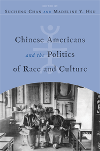

New perspectives on making and writing Chinese American history
New perspectives on making and writing Chinese American history


 New perspectives on making and writing Chinese American history
New perspectives on making and writing Chinese American history

|  |
Chinese Americans and the Politics of Race and Cultureedited by Sucheng Chan and Madeline Y. Hsupaper EAN: 978-1-59213-753-4 (ISBN: 1592137539) |
"Covering a wide range of historical and contemporary issues in Chinese American life, this anthology is vastly informed and filled with fresh research drawing on archives or documents that hitherto have not been accessed. The ideas contained in the essays are so original and comprehensive that together, they constitute both a theoretically and empirically engaging challenge to tradition-centric concepts in Chinese American studies I find few existing scholarly works that can match the scope and depth of this volume's broad and thought-provoking coverage of Chinese American history."
—Xiao-huang Yin, author of Chinese American Literature since the 1850s
Sucheng Chan introduces this valuable new anthology with a commanding discussion of the field of Chinese American studies, in which she examines its history and points the way ahead. Here she and Madeline Y. Hsu have brought together leading-edge scholarship from a new generation of thinkers, as useful for scholars as it is for undergraduate readers.
The contributors address a broad range of issues, from the activism of left-wing and Communist Chinese immigrants to the U.S. in the 1920s and early 1930s and humanitarian relief during the Sino-Japanese War to the construction of new Chinese regional identities in New York.
Excerpt available at www.temple.edu/tempress
"This is a timely, innovative, and very readable anthology that adds to and complicates our existing understandings of Chinese American history and the intertwined aspects of culture and politics in community formation, identity, and even U.S.-China relations. An excellent book for classroom use.."
—Erika Lee, author of At America's Gates: Chinese Immigration During the Exclusion Era, 1882-1943
"Chan's introductory chapter offers an excellent and comprehensive literature review to demonstrate the synergy in Chinese American History and historiography.... Each chapter in this collection is remarkable for its interesting stories, keen observations, methodical analyses, and intriguing insights. The authors are attentive to detail and examine the complexities of the topics through a transnational or diasporic lens, avoiding ideological assertions and questionable assumptions.... It makes an original contribution to Chinese American history and historiography, a topic that will surely continue to attract attention in the next several decades."
—The Journal of Chinese Overseas
"The essays in this volume are based on themes that the community-based historian Him Mark Lai introduced. Sucheng Chan's introduction provides an up-to-date bibliographical essay on Chinese American historiography from its inception in the 1850s to after the mid-1980s, when Chinese American studies matured and became more objective.... All of the chapters are well written and researched and contribute to our understanding of the Chinese American experience. I highly recommend this book."
—Journal of American History
"This anthology of seven fine essays honor[s] the pathbreaking, prolific, and generous historian Him Mark Lai...The editors have put together a thoughtful, remarkably cohesive collection that spans in chronological scope the late-nineteenth century to the present; nearly all of the contributors are historians.... Taken together, this is a solid, versatile collection ideal for classroom use, or for readers interested in getting a taste of the vibrant state of Chinese American history, whether one calls it social, cultural, or political history."
—Western Historical Quarterly
"Put together by two leading scholars in the field, Chinese Americans and the Politics of Race and Culture represents an important contribution to the study of Chinese American history.... [T]he anthology offers an important framework through the notion of 'politics of culture,' which is articulated in the preface written by Chan...The introduction, also by Chan, gives us a most comprehensive historiographical account of Chinese American history. Her discussions in the preface and introduction help us appreciate the intellectual importance and coherence of the book.... In short, the intellectual insights of this compelling volume will benefit scholars of Chinese America as well as Asian America and immigration and ethnicity."
—American Studies
"This is a must read for those interested in the field of Chinese American history....This collection of essays...covers a broad range of both historical and contemporary issues and has none of the Western cultural biases usually seen in an anthology of this kind. Together, the authors of Chinese Americans and the Politics of Race and Culture represent cutting-edge scholarship from a new generation of Chinese historians. Their contributions make new and original inroads into Chinese American history and historiography, even as they challenge Western-centric concepts. The book is as timely as it is honest, and it will help to teach us to avoid the ideological assertions and questionable assumptions usually attached to Chinese American history. Sucheng Chan, in her introduction to this valuable new anthology, not only provides us with a comprehensive time line of Chinese American history....This book is a benchmark for our continued understanding of the Chinese American experience. It is also a very enjoyable read."
—The Journal of American Ethnic History
"The collection of essays...is an excellent example of a collaboration that involves authors across generations.... Chan�s long introduction on Chinese American historiography deserves attention. Chan has published a number of state-of-the-art essays before, and this one � with almost two hundred endnotes � brings her review up to date. Her command of the rapidly growing literature in the field is methodical, and her commentaries on individual works are incisive. Her observations on scholarly trends and pitfalls are equally keen."
—China Review International
Preface
A Note on Transliteration and Chinese Names
Acknowledgements
Introduction Chinese American Historiography: What Difference Has the Asian American Movement Made?
1. History as Law and Life: Tape v. Hurley and the Origins of the Chinese American Middle Class
2. The Activism of Left-Wing and Communist Chinese Immigrants, 1927-1933
3. Filling the Rice Bowls of China: Staging Humanitarian Relief during the Sino-Japanese War
4. From Pariah to Paragon: Shifting Images of Chinese Americans during World War II
5. From Chop Suey to Mandarin Cuisine: Fine Dining at the Refashioning of Chinese Ethnicity during the Cold War Era
6. Searching for Roots in Contemporary China and Chinese America
7. The "Spirit of Changle": Constructing a Chinese Regional Identity in New York
Contributors
Index
 | Sucheng Chan is professor emerita of Asian American Studies and Global Studies at the University of California, Santa Barbara. |
 | Madeline Y. Hsu is Director of the Center for Asian American Studies and Associate Professor of History at the University of Texas at Austin |
Asian American Studies
American Studies
Race and Ethnicity
Asian American History and Culture, edited by K. Scott Wong, Linda Trinh V�, and Cathy Schlund-Vials.
Founded by Sucheng Chan in 1991, the Asian American History and Culture, series has sponsored innovative scholarship that has redefined, expanded, and advanced the field of Asian American studies while strengthening its links to related areas of scholarly inquiry and engaged critique. Like the field from which it emerged, the series remains rooted in the social sciences and humanities, encompassing multiple regions, formations, communities, and identities. Extending the vision of founding editor Sucheng Chan and emeriti editor Michael Omi and David Palumbo-Liu, series editors K. Scott Wong, Linda Trinh V�, and Cathy Schlund-Vials continue to develop a foundational collection that embodies a range of theoretical and methodological approaches to Asian American studies.
© 2015 Temple University. All Rights Reserved. This page: http://www.temple.edu/tempress/titles/1962_reg.html.